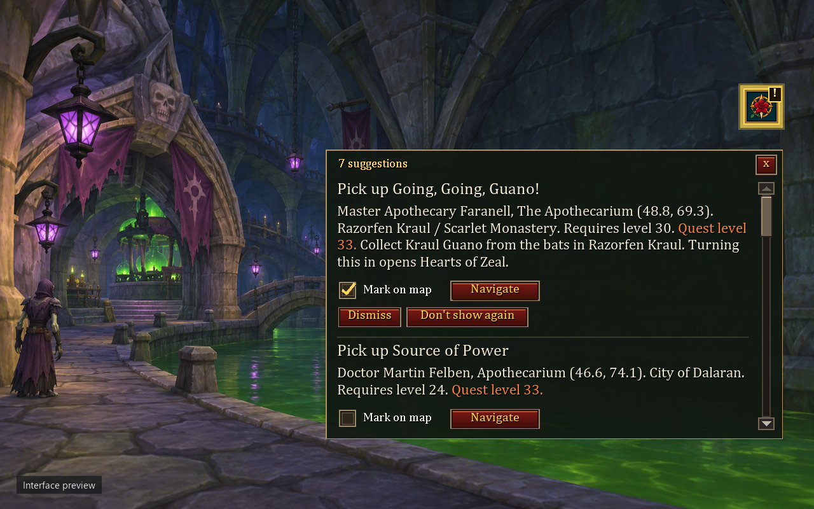
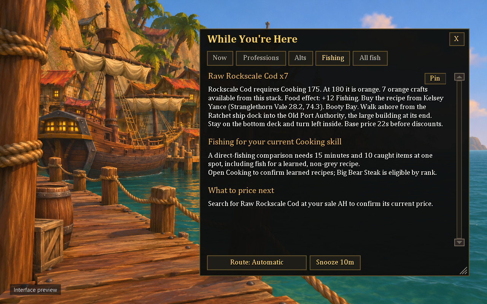

A WoW Forever addon by Rosethorn
While You’re Here
Pick up the dungeon quest before you leave town. Find the recipe before your boat sails. Send the ore in your bags to the alt who needs it.
What it can do
Choose the tips you want under /wyh → Tips. Each switch is saved across your alts.
- Find dungeon prequests and quest giversGet an alert anywhere in the zone. Mark several givers on your map or follow an arrow to one.
- Spot nearby recipes and training booksFind a useful vendor before you leave Desolace, Arathi Highlands or Booty Bay.
- Plan professions and earn Legacy PointsSee which alt is close to 150, 225 or 300 in a craft, plus the next recipe and materials to buy.
- Send spare materials to the right altAt the mailbox, check who can use your ore, cloth or leather and what’s already in their bank.
- Find fishing stops and recipes for your catchFish while you wait for the boat. Check the local skill target and where to buy the recipe.
- Compare fishing spots and auction pricesCompare your catches per cast and per hour. See when selling fish could fund more Cooking skill-ups.
What you’ll see
Illustrated interface previews

Undercity · Razorfen Kraul
Never miss another dungeon prequest
At level 30, your icon lights up even in the Trade Quarter. Faranell has Going, Going, Guano! across town in the Apothecarium.

Arathi Highlands · Profession vendors
Buy the pattern on this trip
Reach Thoradin’s Wall with Tailoring 145 and Azure Silk Cloak still to learn. Your icon lights up for Jun’ha’s limited-stock pattern in Hammerfall.

Booty Bay · Fishing & Cooking
Find the recipe for the fish you just caught
Land a Raw Rockscale Cod while waiting for the boat? The addon sends you to Kelsey Yance in the Old Port Authority, bottom deck, left as you enter.
In game
Install or update
- Download and unzip
While-Youre-Here.zip. - Copy the
RosethornAdvisorfolder into your WoW ForeverInterface/AddOnsfolder. For an update, replace the existing folder. - Enable While You’re Here at character selection. Left-click its icon for all suggestions or type
/wyhfor settings.
Updates keep your settings, alt records and map pins. Type /wyh now for suggestions or /wyh help for all commands.
Choose what lights up
All current suggestions share one scrollable list. Dismiss a pickup for this visit, snooze alerts, or mute a tip across your characters. Choose which categories can open the window and whether to keep quiet in combat.
Move or resize the display. A colour wheel and transparency controls let you change the text, background, window border and launcher glow. Your preferences carry across alts on this installation.
What’s tracked across my roster?
Log into each alt and open its bank to update its stock. Browse all 12 professions, mark the ones you intend to learn, and see training caps. The six primary crafts include recipe routes and shopping estimates. Open your profession window to record learned recipes where supported. Check the in-game Legacy panel for credit earned elsewhere.
The catalogue covers 502 Horde and shared dungeon quests and prerequisites, including 402 with verified map locations. Suggestions show the required level and colour-coded quest level. Accepting a pickup clears the alert, and completing a prerequisite can reveal the next step. Entering a Spelunker dungeon can prompt a final-boss credit check.
Fishing prices, routes and optional addons
While You’re Here works on its own. Choose a destination manually or let a compatible RestedXP arrow trigger travel tips. Use prices from an auction search, a manual quote or optional Auctionator data.
After five minutes, see the estimated auction value of your priced catches per hour. To rank spots, fish each for at least 15 minutes, land 10 items and collect recent quotes from the same market. Per-cast rankings also need 20 observed casts. Cooking comparisons cover ingredients and the auction cut where known.